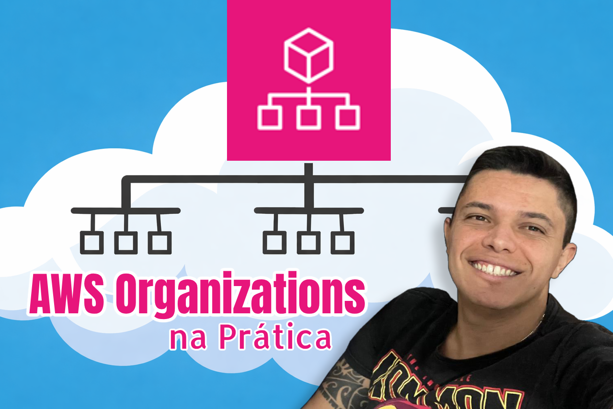
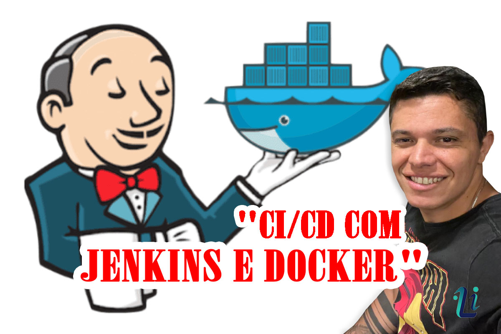
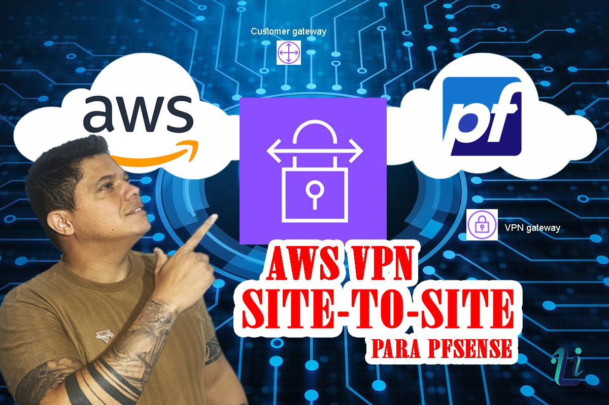
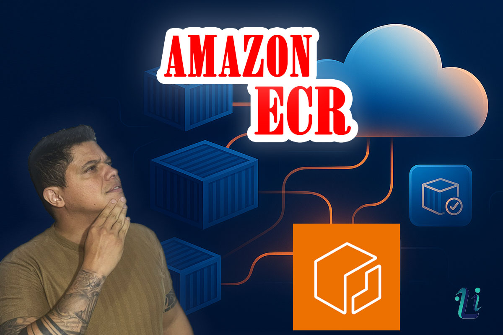
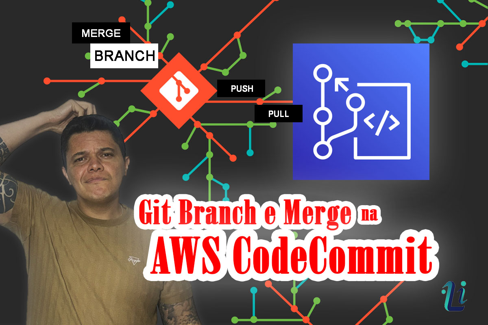
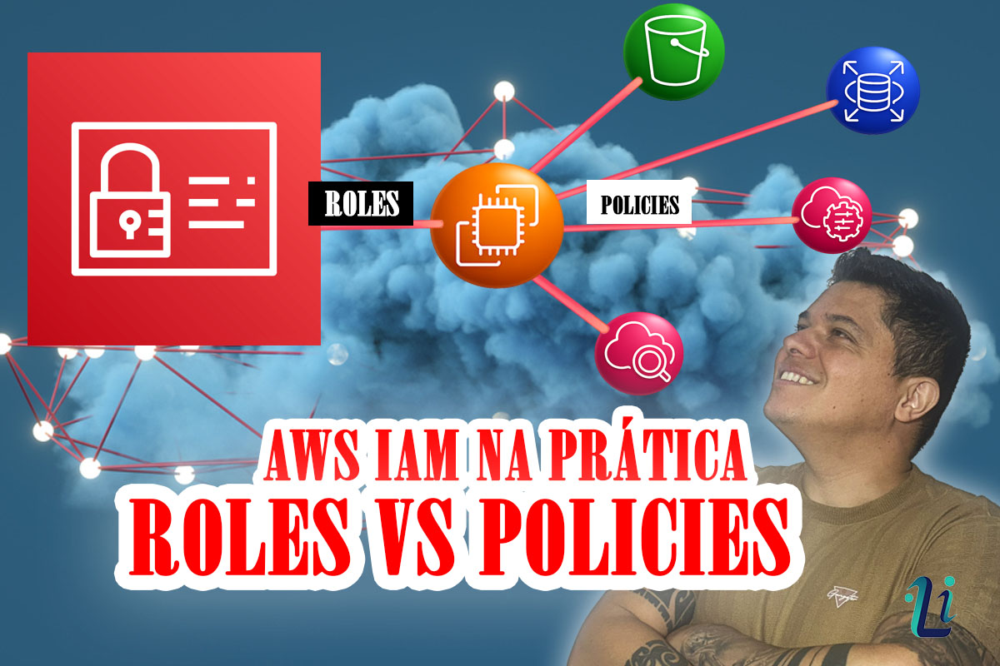

Sobre: AWS Cloud e DevOps
O que é Cloud Computing (AWS)?
Amazon Web Services (AWS) é uma plataforma de computação em nuvem que oferece uma ampla gama de serviços sob demanda, incluindo armazenamento, processamento, bancos de dados e análise de dados. Permite que empresas escalem recursos de TI de forma rápida e eficiente, reduzindo custos de infraestrutura.
O que é DevOps?
DevOps é uma cultura e prática de engenharia que integra desenvolvimento (Dev) e operações (Ops). Focado em automação, integração contÃnua, entrega contÃnua e monitoramento para melhorar a qualidade e velocidade de entrega de software, garantindo confiabilidade e estabilidade em produção.
A Sinergia AWS + DevOps
AWS fornece a infraestrutura escalável e flexÃvel que DevOps necessita para implementar práticas modernas. Juntos, permitem automação total do deploy, gerenciamento de recursos, monitoramento em tempo real e recuperação de falhas, criando um ciclo de desenvolvimento mais ágil e confiável.
📸 Galeria de Projetos
.jpg)

.jpg)

.jpg)
.jpg)

.png)

.jpg)


.jpg)